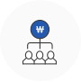

사업개요


 사업성과 기술성이 우수한 성장유망 중소기업의 생산성 향상, 고부가가치화 등 경쟁력 강화에 필요한 자금을 지원하여 성장동력을 창출하는 사업입니다.
지원대상
- 혁신성장지원(협동화, 산업경쟁력강화 포함), Net-Zero 유망기업 지원, 제조현장스마트화자금으로 구분
혁신성장지원
- 다음 유형에 해당하는 수출실적 10만불 미만(최근1년) 중소기업
- 혁신성장지원자금 內 다음 지원대상을 위한 자금 별도 운용
협동화
- 3개 이상의 중소기업이 규합하여 협동화실천계획의 승인을 얻은 자 또는 2개 이상의 중소기업이 규합하여 협업사업계획의 승인을 얻은 자(업력제한 없음)
* 별표1에 따른 ‘융자제외 대상업종’ 中 산업단체(KSIC 94110)는 지원대상에 포함
* <2.공통사항>라.융자제한기업⑧항(부채비율 초과기업) 적용 제외
산업경쟁력강화
- 한중FTA 지원업종(참고15)을 영위하는 업력 7년 이상인 중소기업
Net-Zero 유망기업 지원
-
다음 요건에 해당하는 그린기술 사업화 및 저탄소·친환경 제조로 전환을 추진 중인 중소기업
- 백신·바이오, 반도체 등 혁신성장분야 중소기업 신재생에너지, 탄소저감 등 그린분야(참고2) 영위기업 또는 기술 사업화 기업
- 원부자재 등을 친환경 소재로 전환하는 기업
- 오염물질 저감 설비, 저탄소·에너지 효율화 · 환경오염방지 설비 등 도입 기업
- 지역별위원회(지방중기청)에서 탄소중립 컨설팅(중소기업 혁신바우처) 지원대상으로 선정된 기업
- 탄소중립형 스마트공장 지원사업 협약기업
제조현장스마트화
-
다음 요건에 해당하는 중소기업
- 스마트공장 추진기업 중 ‘스마트공장 보급사업’ 등 참여기업*
* 스마트공장 보급사업 및 생산현장디지털화 사업 등
- 4차 산업혁명 관련 신산업· 신기술 영위기업
- ICT기반 생산 효율화를 위한 자동화 시설 도입기업
* 국내 복귀기업은 <2.공통사항>라.융자제한기업⑧항(부채비율 초과기업) 적용 제외
융자조건
- 혁신성장지원 (산업경쟁력강화 포함)
-
- 대출한도 : 연간 60억원 이내 (운전자금은 연간 5억원 이내)
- 대출기간 : (시설자금) 10년 이내 (거치기간 : 담보 4년 이내, 신용 3년 이내) , (운전자금) 5년 이내 (거치기간 : 2년 이내)
- 대출금리 : 정책자금 기준금리(변동) + 0.5%p
- 대출방식 : 직접대출, 대리대출
- 기타 : 운전자금은 동 자금의 시설자금을 대출받은 기업 중 시설 도입 후 소요되는 초기가동비만 지원(시설자금의 50%이내) / 별표3(사업별 대출한도 우대기준)에 해당하는 기업은 대출한도 우대 가능
- 협동화
-
- 대출한도 : 연간 100억원 이내(운전자금은 연간 10억원 이내)
- 대출기간 : (시설자금) 10년 이내 (거치기간 : 5년 이내) , (운전자금) 5년 이내 (거치기간 : 2년 이내)
- 대출금리 : 정책자금 기준금리(변동)
- 대출방식 : 직접대출, 대리대출
- 기타 : 토지구입비 지원 시 건축허가 조건 예외 적용 / 부지 조성공사 용도의 시설자금 지원 가능
- Net-Zero 유망기업 지원
-
- 대출한도 : 연간 60억원 이내(운전자금은 연간 5억원 이내)
- 대출기간 : (시설자금) 10년 이내 (거치기간 : 담보 4년 이내, 신용 3년 이내) , (운전자금) 5년 이내 (거치기간 : 2년 이내)
- 대출금리 : 정책자금 기준금리(변동) + 0.5%p
- 대출방식 : 직접대출, 대리대출
- 기타 : 별표3(사업별 대출한도 우대기준)에 해당하는 기업은 대출한도 우대 가능
- 제조현장스마트화
-
- 대출한도 : 연간 100억원 이내(운전자금은 연간 10억원 이내)
- 대출기간 : (시설자금) 10년 이내 (거치기간 : 담보 4년 이내, 신용 3년 이내) , (운전자금) 5년 이내 (거치기간 : 2년 이내)
- 대출금리 : 정책자금 기준금리(변동)
- 대출방식 : 직접대출, 대리대출
- 기타 : 운전자금은 동 자금의 시설자금을 대출받은 기업 중 시설 도입 후 소요되는 초기가동비만 지원(시설자금의 50%이내)
융자상담처
더욱 자세한 상담은 전국에 위치한 중진공 각 지역본(지)부로 문의하여 주시기 바랍니다.